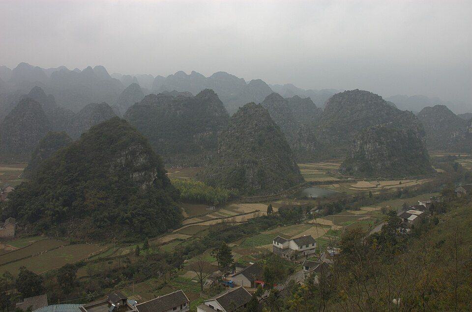
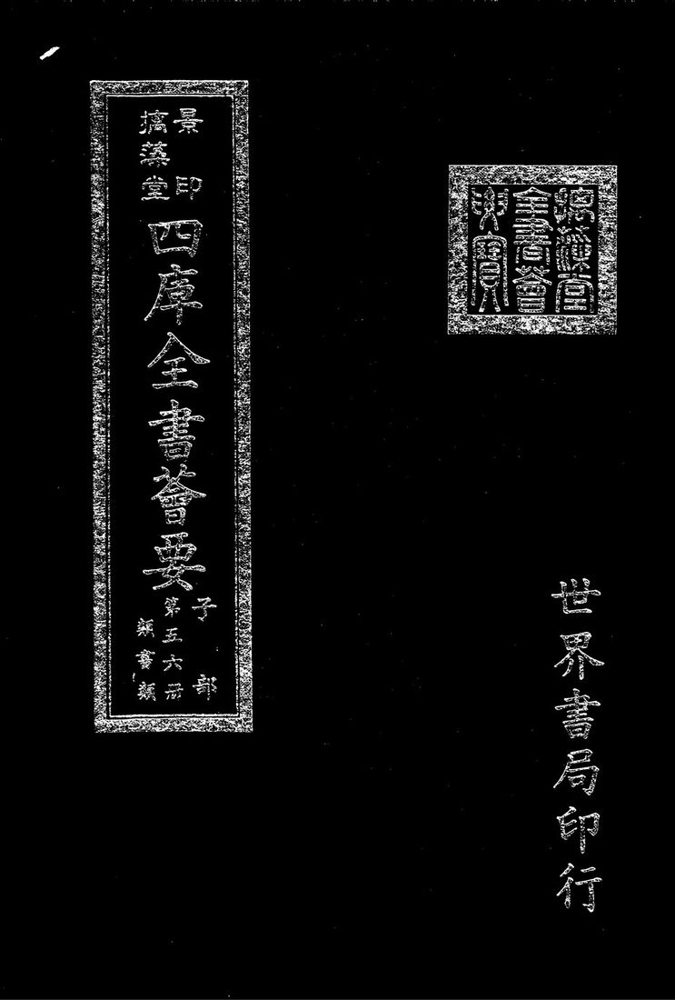
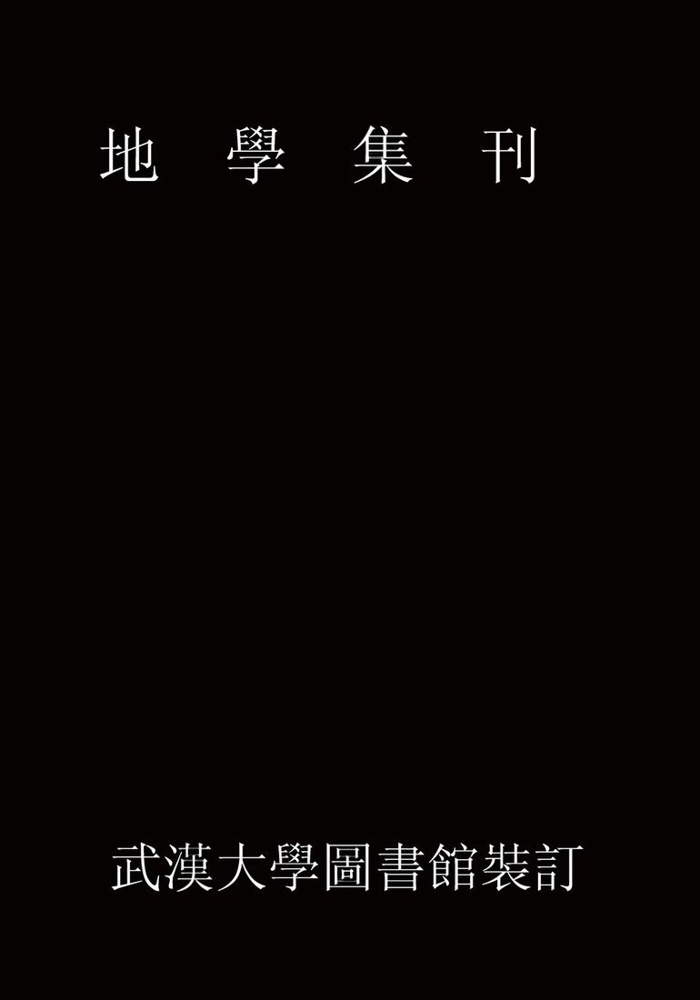
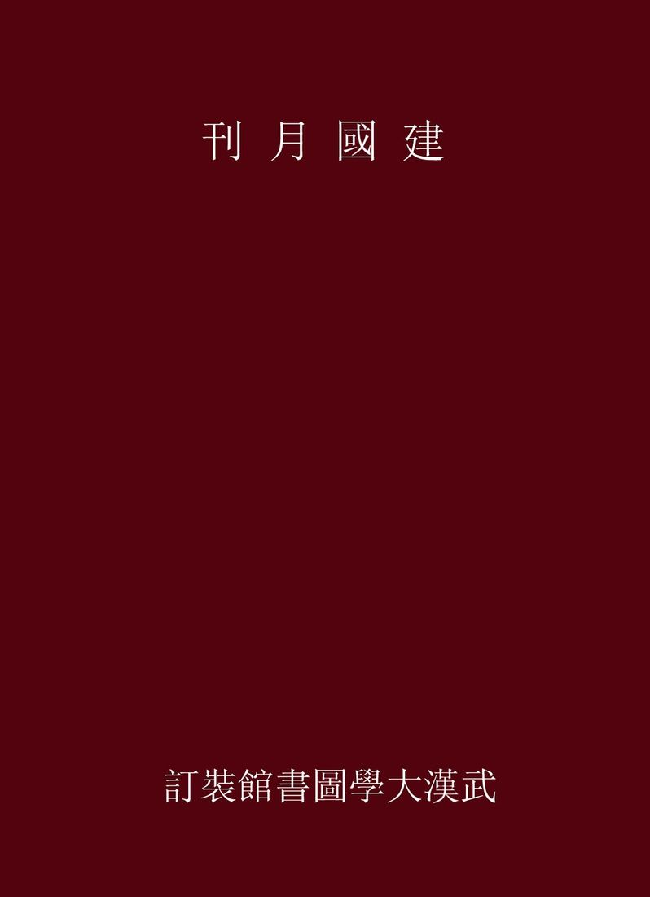
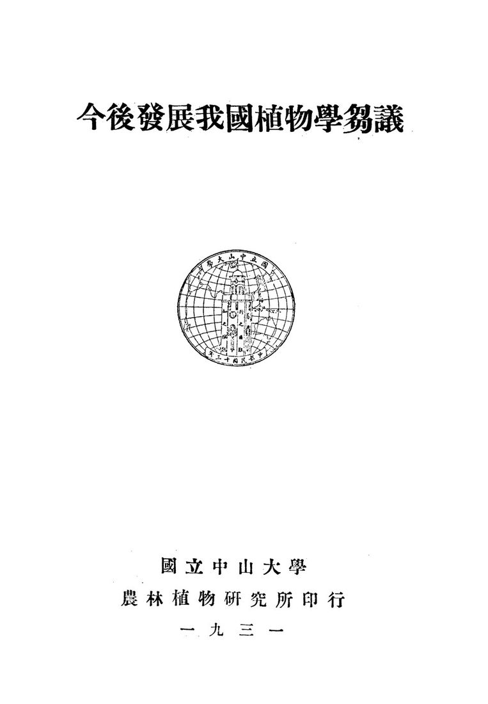
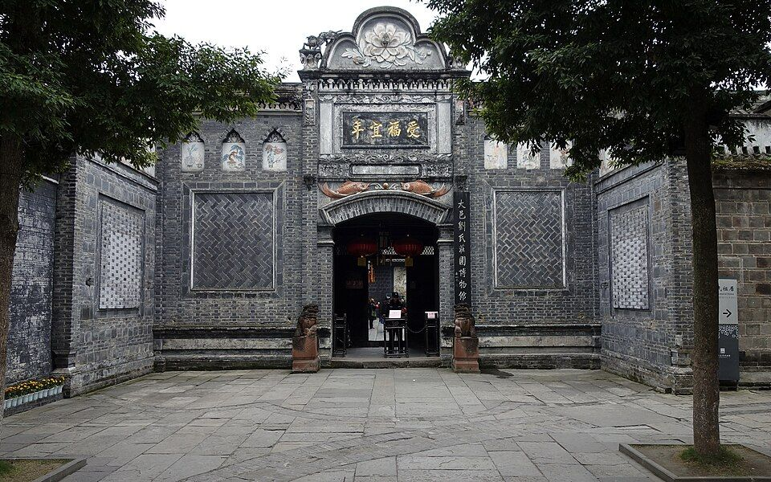

所在贵州
适宜季节2 月下旬至 3 月中下旬
建议天数2-3 天
资料状态资料待复核
动态信息出行前复核：门票、开放时间与预约规则会变化，请以官方渠道为准。
先看结论4
快速决策索引4
全年月份速查12
1月
- 最适合
- 万峰林冬日暖阳、峰林布依、贵州龙地质公园博物馆、黔西南州博物馆、羊肉粉
- 食物
- 羊肉粉、杠子面、鸡肉汤圆、刷把头、砂锅
- 提醒
- 早晚冷，峰林里风大；冬季水量相对小
2月
- 食物
- 羊肉粉、五色糯米饭、饵块粑、布依酸笋/酸汤
3月
- 最适合
- 万峰林油菜花、春季田园、骑行、下纳灰村咖啡、贵州龙地质公园博物馆
- 食物
- 羊肉粉、蛋炒饭、刷把头、剪粉
- 提醒
- 花期随气温前后浮动，油菜花别只看网图，出发前搜实时花情
4月
- 食物
- 蛋炒饭、杠子面、羊肉粉、凉剪粉
- 提醒
- 清明和五一前后游客增加，包车和住宿提前定
5月
- 食物
- 羊肉粉、烧烤、凉粉、冰粉、糯米饭
- 提醒
- 逐步进入雨季，峡谷和天坑注意安全公告
6月
- 最适合
- 马岭河丰水期、漂流季、万峰林青绿田园、避暑
- 可安排
- 万峰湖游船、峰林布依、贵州龙地质公园博物馆
- 食物
- 凉剪粉、羊肉粉、烧烤、酸汤、布依农家菜
- 提醒
- 雨后峡谷瀑布壮观，但强降雨可能影响入园/漂流
7月
- 食物
- 羊肉粉、剪粉、夜市烧烤、冰粉
- 提醒
- 暑期亲子和避暑客多，户外注意防晒和雷雨
8月
- 可安排
- 贵州龙地质公园博物馆、黔西南州博物馆、万峰湖
- 食物
- 羊肉粉、三合汤、烧烤、凉粉
- 提醒
- 雷雨多，山地道路和峡谷项目提前确认
9月
- 最适合
- 万峰林稻谷转黄、秋收田园、日落、骑行、摄影
- 食物
- 蛋炒饭、羊肉粉、布依农家菜、新米饭
- 提醒
- 稻谷收割窗口短，9 月中下旬到 10 月初更值得关注实时图
10月
- 食物
- 羊肉粉、杠子面、刷把头、鸡肉汤圆
- 提醒
- 国庆高峰住宿和景区人流明显，国庆后体验更好
11月
- 食物
- 羊肉粉、砂锅、汤锅、烤鱼
- 提醒
- 水量下降但天气更稳定，适合拍峰林层次
12月
- 食物
- 羊肉粉、牛肉粉、鸡肉汤圆、杠子面
- 提醒
- 早晚温差明显，民宿房间保暖和热水要提前看评价
季节限定景观8
马岭河峡谷丰水期
看百瀑、拍峡谷水汽、体验漂流
- 最佳月份
- 6-9 月
- 可看月份
- 5-10 月水量相对较好
- 推荐地点
- 天星画廊、峡谷步道、瀑布群、峡谷电梯沿线
- 提醒
- 强降雨、涨水、落石风险时以景区开放公告为准
景点营业时间和票价速查8
使用说明
- 以下为常见开放时间和成人基础票价，节假日、夜场、演出、漂流、游船、观光车会调整
- 免费景点也可能需要登记或预约，开放式村寨/街区以现场管理为准
- 贵州景区票价以官方购票页、贵州省政府定价清单、景区公告为准
万峰林片区
- 万峰林景区
- 旺季常见 8:00-18:00，淡季常见 8:30-17:30；门票常见旺季 70 元、淡季 60 元，观光车全程常见 50 元
- 万峰林观光车
- 景区内交通项目，常见全程 50 元；是否必须乘坐按入口和游线安排
- 下纳灰/中纳灰/上纳灰村
- 开放式村寨，免费；餐饮、咖啡、民宿、停车按各自收费
- 八卦田/将军峰等观景点
- 随万峰林景区游线参观，费用按景区门票/观光车执行
展开其余 3 项
- 万佛寺
- 开放和收费以寺院现场公告为准，常见为免费或随万峰林路线顺路参观
- 万峰林骑行道
- 开放式乡村道路，免费；自行车/电动车租赁按商家收费
- 万峰林滑翔伞/越野/球幕影院等项目：营业和价格按项目商家当日公告
马岭河片区
- 马岭河峡谷
- 常见 8:00-17:30；门票常见旺季 70 元、淡季 60 元
- 马岭河峡谷电梯
- 常见单程 30 元、往返 40 元；以现场公告为准
- 马岭河漂流
- 夏季为主，价格随漂流段和套票变化，强天气依赖，以官方购票页为准
- 峰林大桥
- 公路桥梁外观/车行经过为主，不是常规收费景区；停车拍照注意安全和交通管控
万峰湖片区
- 万峰湖景区
- 常见 8:00-17:30；游船/码头/观景台套票价格随线路变化，以官方购票页为准
- 红椿码头
- 码头开放和船班以当天水位、天气和运营公告为准；游船另收费
- 万峰湖垂钓/水上项目
- 按俱乐部、船家或景区项目收费，出发前单独确认
布依和夜游
- 峰林布依景区
- 常见白天到夜间开放，夜景和演艺为核心；门票、夜场和演出票以官方购票页为准
- 南龙布依古寨
- 村寨型景点，开放和收费以现场管理为准；多为白天参观更合适
- 纳具村/布依村寨
- 开放式村寨为主，免费或低价停车；民俗体验/餐饮另计
地质、博物馆和人文
- 黔西南州博物馆
- 9:00-17:00，除夕闭馆，免费开放
- 贵州龙地质公园博物馆
- 常见 9:00-17:00，免费开放；以兴义地质公园/博物馆公告为准
- 刘氏庄园
- 常见白天开放，常见凭身份证免费登记；开放时间以现场公告为准
- 何应钦故居
- 常见 9:00-17:00，票价以现场/购票页为准
展开其余 3 项
- 泥凼石林
- 开放式石林/乡镇景点属性较强，收费和开放以现场管理为准
- 雨补鲁天坑
- 乡村天坑景点，开放和收费以当地公告/现场为准
- 贵州醇景区/奇香园
- 常见 8:30-17:00，票价和项目以官方购票页或现场公告为准
城市街区、夜市和商圈
- 桔山广场
- 开放式城市广场，全天可逛，免费
- 街心花园
- 开放式城市公共空间，免费；周边店铺按各自营业
- 兴义商城/梦乐城等商场
- 商场多为 10:00-22:00 左右，以各商场公告为准
- 夜市/烧烤街
- 夜间摊位为主，免费；摊位和营业位置会变化
周边一日
- 清水河景区
- 政府定价清单常见门票 35 元；开放和交通以现场公告为准
- 安龙招堤
- 政府定价清单常见门票 15 元；开放以景区公告为准
- 贞丰双乳峰
- 政府定价清单常见门票 65 元，观光车全程常见 30 元；以官方公告为准
- 晴隆二十四道拐
- 政府定价清单常见门票 60 元，交通项目另计；以景区公告为准
展开其余 2 项
- 兴仁放马坪高山草原
- 政府定价清单常见门票 30 元，交通项目另计；以景区公告为准
- 鲁布格深谷湖
- 跨区域湖峡景观，船班、票价、交通以当地码头/景区公告为准
行前准备3
- 预约和核对
- 万峰林提前看是否需要分时预约、观光车运营和入园口
- 马岭河峡谷雨季必须看开放、漂流、水位和峡谷步道公告
- 万峰湖提前确认船班、码头、天气和返程交通
- 峰林布依提前看夜游、演出、打铁花和闭园时间
- 贵州龙地质公园博物馆/黔西南州博物馆：看开放日和是否临时闭馆
- 穿搭和装备
- 全年舒适步行鞋、防晒、帽子、墨镜、充电宝
- 雨季雨伞/雨衣、防滑鞋、防水袋
- 峡谷鞋底防滑，注意湿滑台阶
- 骑行防晒袖套、轻便外套，电动车看电量和刹车
- 冬季早晚温差大，民宿房间保暖提前看评价
- 交通原则
- 兴义市区到万峰林不远，打车最省心
- 马岭河、万峰湖、地质博物馆、南龙布依古寨相对分散，包车/自驾效率高
- 兴义南站和机场离万峰林方向更顺，住宿可按到达交通选
- 景区之间不要全靠临时公交，末班和班次可能影响体验
住宿建议5
- 万峰林/下纳灰/纳灰村寨
- 适合想看日出日落、稻田、油菜花、慢住、拍照
- 优点离核心景观近，早晚不用赶路，民宿氛围好
- 缺点餐饮选择不如市区多，热门季节价格高
- 关键词下纳灰、上纳灰、中纳灰、将军峰、八卦田、田景房
- 兴义市区/桔山广场/梦乐城
- 适合重视吃喝、夜市、交通、性价比
- 优点羊肉粉和夜宵选择多，酒店性价比高
- 缺点离万峰林早晚光线点需要打车
- 关键词桔山广场、梦乐城、街心花园、兴义商城、州医院周边
- 马岭河峡谷附近
- 适合只为马岭河峡谷或第二天早进景区
- 优点离峡谷近
- 缺点整体住宿和吃喝选择少，通常不如市区/万峰林方便
- 万峰湖/红椿码头周边
- 适合垂钓、湖边度假、慢游
- 优点湖景安静
- 缺点交通不便，餐饮和夜生活少
- 兴义南站/机场附近
- 适合晚到早走、赶高铁/飞机
- 优点交通衔接省心
- 缺点旅行氛围一般，不适合连续住很多晚
地图分区6
核心景点15

万峰林
锥状喀斯特峰林、田园、八卦田、布依村寨、将军峰
- 最佳时间
- 2-3 月油菜花、5-8 月青绿稻田、9-10 月金色稻田、冬季晴天淡季
- 玩法
- 景区观光车看全景，村里骑行看细节，住一晚看早晚光线
- 搭配
- 下纳灰村、峰林布依、万峰湖
- 值不值得专程
- 值得，兴义第一核心
- 提醒
- 不要只坐观光车匆匆走，村寨慢逛才是精华
下纳灰村
布依村寨、田园路、民宿、咖啡、骑行
- 最佳时间
- 春季油菜花、夏季稻田、秋季金色田园
- 玩法
- 住民宿、早晨散步、下午咖啡、傍晚拍峰林
- 值不值得专程
- 值得，适合慢游
- 提醒
- 热门民宿和咖啡店旺季提前订
八卦田
漏斗地貌形成的田园纹理
- 最佳时间
- 油菜花季、稻田季、秋收季
- 玩法
- 观光车观景台、航拍、长焦摄影
- 提醒
- 航拍需遵守景区和村寨管理

将军峰
峰林地标、蛋炒饭聚集点、田园视角
- 最佳时间
- 上午和傍晚
- 玩法
- 看完景吃蛋炒饭，顺路骑行

马岭河峡谷
峡谷地缝、瀑布群、钙化壁、天星画廊
- 最佳时间
- 6-9 月丰水期，春秋也适合步行
- 玩法
- 峡谷步道、拍瀑布、坐电梯省体力，夏季可看漂流
- 搭配
- 贵州龙地质公园博物馆、万峰湖
- 值不值得专程
- 值得，和万峰林互补
- 提醒
- 雨季水量大但风险也高，强降雨时不要硬去

万峰湖
湖面、岛屿、峰林倒影、南盘江水系
- 最佳时间
- 10 月至次年 4 月晴天，夏季也可避暑
- 玩法
- 游船、垂钓、湖边慢游
- 值不值得专程
- 时间多值得；只有一天优先万峰林和马岭河
- 提醒
- 交通和船班是关键，别临时晚到

峰林布依
布依建筑、夜景、演艺、非遗体验、打铁花
- 最佳时间
- 傍晚到夜间，春秋最舒服
- 玩法
- 下午晚些入园，夜景亮灯后体验更完整
- 值不值得专程
- 喜欢夜游/民族风情值得
- 提醒
- 门票和演出价格不低，先看当日节目表
贵州龙地质公园博物馆
贵州龙化石、三叠纪海生爬行动物、兴义世界地质公园科普
- 最佳时间
- 全年，雨天和亲子尤其适合
- 搭配
- 马岭河峡谷、万峰湖
- 值不值得专程
- 亲子和地质爱好者值得
黔西南州博物馆
黔西南民族文化、历史文物、地方展陈
- 最佳时间
- 全年，雨天适合
- 搭配
- 桔山广场、市区吃喝
- 值不值得专程
- 市区有空值得，适合了解当地

刘氏庄园
屯堡式建筑、民国地方家族史、中西合璧建筑
- 最佳时间
- 全年，上午或下午
- 搭配
- 万峰林或市区人文线
- 值不值得专程
- 喜欢老建筑和地方史值得
何应钦故居
民国人物故居、乡镇建筑、历史背景
- 最佳时间
- 春秋，和泥凼石林同线
- 搭配
- 泥凼石林
- 值不值得专程
- 历史爱好者值得，一般游客可作为顺路
泥凼石林
石林地貌、乡野喀斯特
- 最佳时间
- 春秋、晴天
- 搭配
- 何应钦故居
- 提醒
- 交通和现场管理提前确认
雨补鲁天坑
天坑村落、喀斯特乡村、自然地貌
- 最佳时间
- 春秋、晴天
- 玩法
- 自驾/包车更合适
- 提醒
- 小众点，不要雨天硬走山路
南龙布依古寨
布依村寨、传统建筑、民族文化
- 最佳时间
- 春秋、节庆时
- 搭配
- 万峰林或安龙方向
贵州醇景区/奇香园
园林、花木、酒文化、休闲拍照
- 最佳时间
- 春季花开、晴天
- 适合
- 市区轻松半日
街区、夜市和市场5
桔山广场
城市广场、周边吃喝、夜市氛围
- 最佳时间
- 晚上
- 可吃
- 剪粉、烧烤、冰粉、羊肉粉、夜宵
街心花园
老城公共空间、周边小吃
- 最佳时间
- 白天顺路，晚上吃喝
兴义商城/梦乐城/桔山商圈
商场、餐饮、奶茶、超市
- 最佳时间
- 雨天、晚上、补给
万峰林村寨小店
咖啡、民宿餐、蛋炒饭、农家菜
- 最佳时间
- 下午到傍晚
- 提醒
- 景区餐饮价格高于市区，先看菜单
夜市/烧烤街
- 最佳时间
- 5-10 月夜晚
- 可吃
- 烧烤、烤鱼、剪粉、炒饭、凉粉、冰粉
- 提醒
- 摊位变化快，按当晚热闹区域选择
美食总表5
必吃特色
- 兴义羊肉粉
- 早餐灵魂，汤鲜、酱香、羊肉味明显
- 杠子面
- 面条筋道，是兴义传统名小吃
- 刷把头
- 形似小刷子的传统点心/小吃
- 鸡肉汤圆
- 咸口特色，适合想试本地味的人
展开其余 6 项
- 万峰林蛋炒饭
- 将军峰一带代表性游客餐，配小菜和蘸水
- 剪粉
- 兴义夜市和小吃常见，夏天很舒服
- 饵块粑
- 布依特色，可煎可炒可煮
- 三合汤
- 糯米饭、豆类、脆哨等组合的汤泡饭风味
- 五色糯米饭
- 布依节庆和村寨体验常见
- 酸笋/酸汤
- 黔西南酸味体系，配鱼、肉、农家菜
正餐方向
- 布依农家菜
- 酸汤鱼/酸汤牛肉
- 烤鱼
- 黑山羊火锅
展开其余 3 项
- 辣子鸡
- 腊肉炒折耳根
- 野菜/时令蔬菜
夜宵
- 烧烤
- 烤鱼
- 炒粉/剪粉
- 冰粉
展开其余 2 项
- 炸洋芋
- 豆腐圆子
饮品和甜食
- 冰粉
- 糯米冰浆/本地冷饮
- 奶茶/果茶
- 村寨咖啡
- 冲冲糕
伴手礼
- 贵州醇酒
- 兴义羊肉粉料包/米粉
- 薏仁米
- 布依蜡染/扎染小物
展开其余 2 项
- 贵州辣椒制品
- 本地腊肉/香肠
餐厅和店铺7
张晓君羊肉粉
- 类型
- 羊肉粉
- 适合
- 早餐或上午加餐
- 提醒
- 口味偏本地，羊味接受度看个人
周红亚羊肉粉/羊肉馆
- 类型
- 羊肉粉/羊肉方向
- 适合
- 想试兴义羊肉粉代表店
将军峰黄秀蛋炒饭
- 类型
- 万峰林蛋炒饭
- 适合
- 万峰林游玩中午顺路吃
- 提醒
- 游客多，饭点可能排队
鄢亮黑山羊
- 类型
- 黑山羊/羊肉方向
- 适合
- 多人正餐
安龙美美剪粉
- 类型
- 剪粉
- 适合
- 小吃、夜宵、轻食
顶效/兴义深夜羊肉粉
- 类型
- 夜宵羊肉粉
- 适合
- 晚到或夜宵
- 提醒
- 具体营业时间以门店当日为准
万峰林民宿餐厅
- 类型
- 农家菜/布依菜/咖啡
- 适合
- 住万峰林时解决晚饭和下午茶
- 提醒
- 热门民宿餐厅最好提前问是否接待非住客
博物馆和展馆5
黔西南州博物馆
- 类型
- 地方综合博物馆
- 重点
- 民族文化、地方历史、馆藏文物
- 时间
- 1-2 小时
贵州龙地质公园博物馆
- 类型
- 地质科普/化石博物馆
- 重点
- 贵州龙、三叠纪、海生爬行动物、喀斯特地貌
- 时间
- 1.5-2.5 小时
兴义世界地质公园相关展陈
- 类型
- 地质公园科普体系
- 重点
- 峰林、峡谷、化石、喀斯特
刘氏庄园
- 类型
- 历史建筑/地方家族史
- 重点
- 屯堡式建筑群、民国历史
何应钦故居
- 类型
- 人物故居
- 重点
- 民国历史、地方人物
自然、远郊和周边7
鲁布格深谷湖
- 适合
- 湖峡风光、自驾、慢游
- 时间
- 半天到 1 天
- 提醒
- 路线和船班提前确认
清水河景区
- 适合
- 小众自然风光、顺路自驾
- 提醒
- 交通和开放以现场为准
安龙招堤
- 适合
- 荷花、历史园林、安龙县城一日
- 最佳时间
- 夏季荷花，春秋散步
贞丰双乳峰
- 适合
- 喀斯特地貌、顺路打卡
- 提醒
- 景区商业化较明显，按兴趣选择
晴隆二十四道拐
- 适合
- 抗战公路、山路地标、历史摄影
- 提醒
- 自驾注意山路安全
兴仁放马坪高山草原
- 适合
- 草原、亲子、露营、夏季避暑
- 提醒
- 离兴义有距离，适合自驾一日
安龙国家山地户外运动示范公园
- 适合
- 户外运动、轻度拓展
- 提醒
- 项目开放以当日为准
路线模板12
1 日亲子科普路线
- 上午贵州龙地质公园博物馆
- 中午市区吃饭
- 下午黔西南州博物馆
- 晚上桔山广场/夜市
雨天路线
- 贵州龙地质公园博物馆
- 黔西南州博物馆
- 羊肉粉/杠子面
- 商场/咖啡/夜市
- 提醒强降雨不建议去峡谷、天坑和山路小众点
远郊一日游决策4
交通细节6
- 到达兴义
- 兴义万峰林机场适合飞机抵达，离市区和万峰林方向都不算远
- 兴义南站高铁站，盘兴高铁开通后更适合作为到达口岸
- 兴义站/汽车站按实际车次选择，注意和兴义南站区分
- 市区到万峰林
- 打车最省心，车程通常不长
- 也可公交/客运接驳，但班次和等待时间要预留
- 万峰林内部
- 景区观光车适合看全景
- 村寨慢游适合租电动车/自行车
- 电动车注意续航、刹车和停车点
- 市区到马岭河
- 打车/包车方便
- 峡谷游玩结束后再去万峰湖要预留足够车程
- 市区到万峰湖
- 建议包车/自驾
- 船班和返程车是关键，不建议临时傍晚才去
- 兴义周边
- 安龙、贞丰、晴隆、兴仁方向都适合自驾或包车
- 山区道路雨天谨慎，别压夜路
避坑和取舍8
不要只给兴义留半天
- 万峰林、马岭河、万峰湖至少需要 2 天体验更完整
不要正午暴晒骑行万峰林
- 早晚更舒服，也更出片
不要雨天硬走小众山路
- 天坑、石林、湖边和峡谷都受雨季影响
不要忽略观光车和二消成本
- 万峰林观光车、马岭河电梯、万峰湖游船、峰林布依演艺都可能另计
不要把万峰湖当短平快打卡点
- 它更适合慢游，不适合赶在傍晚临时跑
不要只吃景区餐
- 兴义市区羊肉粉、杠子面、夜市更有本地味
不要错过早晚光线
- 万峰林最漂亮的时间往往不是中午
不要把“兴义”和“黔西南所有景点”混为一天
- 贞丰、晴隆、兴仁、安龙都需要额外交通时间